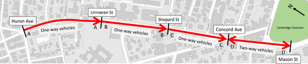
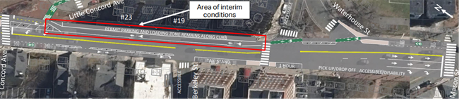
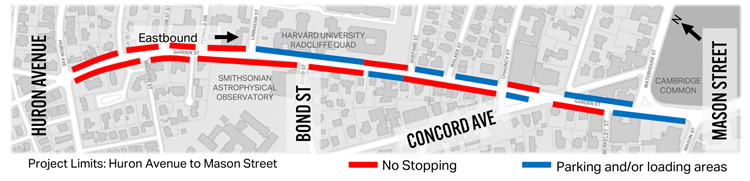

We removed a little over 50 of the approximately 110 parking
spaces on Garden Street within the project limits. As part of the design
process, parking was prioritized in the eastern section, largely
between Linnaean Street and Mason Street. Between Shepard Street and
Mason Street, only about five spaces of about 37 were removed. The
majority of the parking loss was located on the Huron Avenue end of the
project, where most houses have driveways.
Our informal observations (on the evenings of Monday, November 7;
Tuesday, November 8; and Wednesday, November 9) noted that between five
and seven parking spaces remained available each night in the blocks
between Linnaean Street and Shepard Street, showing that this parking
removal still resulted in an excess of spaces being available each night
for residents.
We plan to do a more thorough parking study with multiple observation
windows within the next few months and will post the results on the
project website.
Our design consultant, Toole Design, performed a study using
StreetLight Data to estimate the effects of a change to one-way.
StreetLight data shows only those using navigation devices (such as
navigation apps on phones). To perform a StreetLight Data analysis, you
pick a time period, an origin point, and several destination gates to
get navigation app counts, and then adjust the values to reflect
real-world conditions using actual count data. This method scales the
StreetLight data up to align with real-world volumes as best they can.
From the analysis memo:
"Analyses looked at daily trends and averaged hourly data in the
morning peak period from 7 to 9 a.m. and the evening peak period from 4
to 6 p.m. on weekdays (Tuesday, Wednesday, Thursday) in October 2021.
Based on discussions with the City, October 2021 trends were evaluated
such that typical school-year trends unaffected by holiday travel in
November and December would be represented."
The June 2022 counts were used to scale the volumes up, but the
routes analyzed reflected a multi-date time period in October 2021 when
Harvard was in session and the community back from summer vacations. We
have a permanent traffic count station at the Garden Street at Huron
Avenue/Sherman Street intersection, and it shows that total vehicle
volumes vary by about 5 percent between June and October, which is
within the margin of error for both the StreetLight analysis in general,
as well as day-to-day swings.
Our first community meeting on the project spoke about the
project’s background, context, and the existing conditions, including
crashes (
additional info).
However, there are likely more crashes than the 19 shown in the
presentation, as we only have data from reported crashes (calls to the
Cambridge Police Department), not ones that resulted in the two parties
handling the crash repercussions privately. The available data show us
that all reported crashes that included a driver striking a person
walking or biking resulted in an injury to the person walking or biking.
Separated bike lanes increase the space between people biking and
driving allowing for additional time to identify, process, and avoid
potential conflicts (
additional info). They also reduce crossing distances for people walking and increase yielding rates at crosswalks (
additional info). They are part of a proactive investment to reduce the likelihood of future crashes and injuries.
We posted the FAQs below before we installed the project.
How will Garden Street change for people driving?
One way for vehicles
Garden Street will become a one-way for
vehicles between Huron Avenue and the triangle at Concord Avenue. People
driving on this part of Garden Street will only be able to travel
eastbound, toward Cambridge Common/Harvard Square. People driving away
from Harvard Square may use Concord Avenue, Massachusetts Avenue, or
otherwise reroute their trips. We will share information about the
directional change with Google Maps, Waze, and other wayfinding apps so
that they aren’t directing drivers westbound on Garden Street.

Green paint indicating where to yield to people biking
People driving will notice green paint
where separated bike lanes intersect with side streets – this reminds
drivers who are turning that they must yield to people biking straight.
How will Garden Street change for people biking?
Separated bike lanes
This project will install separated bike
lanes on each side of Garden Street. Eastbound separated bike lanes
traveling toward Harvard Square will begin at Huron Avenue and end at
Berkeley Street (slightly before Mason Street). Westbound separated bike
lanes traveling away from Harvard Square will begin at Mason Street and
end at Huron Avenue. Separated bike lanes will be at least five feet
wide, with a striped buffer between the bike lane and vehicular travel
lane. Flex posts in the buffer lane will add a physical barrier between
people biking and people driving.
Temporary standard bike lane
Until overheard wires are removed, likely
next year, there will be a temporary condition for people biking
westbound between Waterhouse Street and Concord Avenue. In that section,
there will be a standard bike lane between the parking and travel
lanes.

New bike signals
There will be new bike signals at the
Huron Avenue/Sherman Street intersection, Linnaean Street intersection,
and Concord Avenue/Follen Street intersections. These will indicate when
people biking can safely proceed through the intersection.
How will parking and loading change?
Permit Parking
A little less than half of the permit
parking spaces on Garden Street between Huron Avenue and Mason Street
will be removed (total spaces will change from 112 to 59).

In response to community feedback, the final design retains a significant amount of permit parking close to Harvard Square.
- Between Concord Avenue and Mason Street, the number of permit
parking spaces will decrease from 19 to 13, with parking maintained on
the north side of the street near the apartment buildings.
- Between Shepard Street and Concord Avenue, the number of permit parking spaces will increase from 18 to 19.
- Between Linnaean Street and Shepard Street, the number of permit parking spaces will decrease from 49 to 27.
- Between Huron Avenue and Linnaean Street, the number of parking spaces will decrease from 26 to zero.
Click here for details on parking changes.
Accessible/Disability spaces
We will increase the number of
accessible/disability spaces between Concord Street and Mason Street
from three to five. We will keep two spaces at First Church, relocate
one space to the Berkeley Street accessible ramp, and add two new spaces
along the curb on Waterhouse Street.
Loading
We will add one new loading zone and retain all existing loading zones. Changes to loading include:
- A new loading zone near Shepard Street
- A relocated loading zone near Chauncy Street
How will crosswalks improve?
Installing separated bike lanes improves
existing crosswalks. By installing separated bike lanes, crossing
distances become shorter, sightlines are improved, and each potential
conflict can be handled separately (i.e., cross bike lane, then vehicle
lanes). These lanes also visually narrow the roadway for drivers,
encouraging lower speeds and higher yielding rates at crosswalks. At
most crosswalks along the project area, tan-colored roadway paint will
be added to add additional emphasis and provide clearer direction to
people walking.
The Waterhouse Street and Shepard Street
crosswalks were the most often mentioned as needing improvement during
the outreach process for this project. In addition to the above
improvements as part of the installation of separated bike lanes, we
will do the following:
- At Waterhouse Street, we will install a rectangular rapid
flashing beacon (RRFB) as part of the project. This is a push-button
activated flashing crosswalk sign.
- At Shepard Street, we plan to add the second crosswalk across
Garden Street or move the crosswalk to the other corner to improve
visibility as part of an upcoming DPW reconstruction project (FY23).
![Installing separated bike lanes improves existing crosswalks. By installing separated bike lanes, crossing distances become shorter, sightlines are improved, and each potential conflict can be handled separately (i.e., cross bike lane, then vehicle lanes). These lanes also visually narrow the roadway for drivers, encouraging lower speeds and higher yielding rates at crosswalks. At most crosswalks along the project area, tan-colored roadway paint will be added to add additional emphasis and provide clearer direction to people walking.](garden_safety_files/gardenstreetimprovementsforpeoplewakling.PNG)
What will happen to current bus and shuttle routes?
MBTA
Three MBTA bus routes use a portion of
Garden Street within the project area (between Mason Street and Garden
Street). We will improve visibility for bus drivers by moving the
Harvard-bound bus stop at Garden Street and Concord Avenue to south of
the crosswalk across Garden Street. This stop is currently located
within the intersection. There are no planned changes to the bus routes
themselves as part of this project.
Lesley University
Lesley University shuttles that currently
use Garden Street in the westbound direction will instead use Waterhouse
Street for trips between their campuses. There are no changes to
existing shuttle stop locations
Harvard University
Harvard University shuttles that currently
use Garden Street in both directions to access Radcliffe Quad will
instead use Massachusetts Avenue and Linnaean Street (their current
backup route) in place of westbound travel on Garden Street. They will
still travel eastbound on Garden Street as they do today when returning
toward Harvard Square. On occasion, shuttles may use Concord Avenue and
Madison Street as the new backup route--however, this would be
infrequent. There are no changes to existing shuttle stop locations.